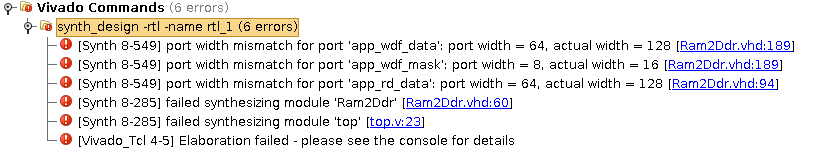
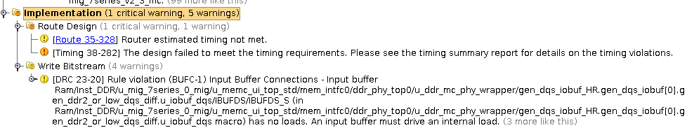

Nexys4DDR DDR2 动手玩
尝试使用 Nexys4DDR 的 DDR2，这里记录了一些试错的过程。
- 操作系统: Ubuntu 14.04 LTS
- ISE: Vivado 2015.2
- Board: Nexys4DDR (xc7a100tcsg-1)
首先希望将 Digilent 官方提供的 Bram2Ddr 模块成功综合并制作一个小型的 demo，但是不是很成功。
我创建了一个新的纯净的项目，使用了官方提供的 MIG (Memory Interface Generator) 配置文件 生成的 IP 核；又写了个顶层模块制作简单的 demo。首先观察 RTL 图，但是出现了 critical warning:

然而相关的 vhdl 代码定义都是 128 位宽，而且也没有非常复杂的使用逻辑。不清楚原因何在。
现在转换思路，将官方的使用 DDR2 的 demo: looper 进行精简，简化到只有读写数据并使用 LED 输出的功能。之后再观察如何从零开始配置。
具体的工程放在了 GitHub 上，我将与实际应用相关的代码都删除干净，只保留了倍频的时钟、Bram2Ddr、MIG 和 XADC 模块，直接通过板子的 SW 去控制读写，用 LED 观察输出。但是，在布线时，出现了时序不满足的情况，最终上板测试也没有预期的效果。
